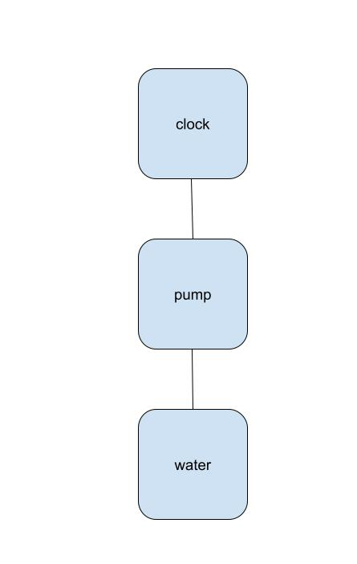

.jpg)

We knew we did not want to use a hydration sensor because we wanted the product to last and the hydration sensors tend to decay. Therefore, we choose for a clock-based greenhouse. We also wanted to minimize the input from the owner so we created a solar-powered project. One option we explored was to add a temperature control system into the greenhouse. This would make it possible to grow a variety of plants in many climates. However, the main problem we faced was powering the heater/ cooler with a solar cell so when we had to choose between solar or temperature we choose solar.
// Herbal garden watering project //
/*
The following part of the code is from https://create.arduino.cc/projecthub/robotgeek-projects-team/
using-a-real-time-clock-with-arduino-6b3896
and from http://www.instructables.com/id/How-to-use-a-Buzzer-Arduino-Tutorial/
*/
#include
#include "DS1307.h"
DS1307 clock;//define a object of DS1307 class
const int RELAY = 4; //Relay set to digital pin 4
const int buzzer = 9; //Buzzer set to digital pin 9
void setup()
{
pinMode(RELAY, OUTPUT);
clock.begin();
pinMode(buzzer, OUTPUT); // Set buzzer - pin 9 as an output
}
void loop()
{
timedRelay();
tone(buzzer, 2000); // Send 2KHz sound signal...
delay(500); // ...for half sec
noTone(buzzer); // Stop sound...
delay(500); // ...for half sec
}
void timedRelay()
{
clock.getTime();
switch (clock.hour)
{
case 6: //when the clock reads 6 AM seconds (Once every 24 hours)
digitalWrite(RELAY, HIGH); // turn the Relay on (HIGH is the voltage level)
delay(20000); // wait for 20 second
digitalWrite(RELAY, LOW); // turn the Relay off by making the voltage LOW
delay(3600000); // wait for 3600 second
}
switch (clock.hour)
{
case 20: //when the clock reads 8 PM seconds (Once every 24 hours)
digitalWrite(RELAY, HIGH); // turn the Relay on (HIGH is the voltage level)
delay(20000); // wait for 20 second
digitalWrite(RELAY, LOW); // turn the Relay off by making the voltage LOW
delay(3600000); // wait for 3600 second
}
}
Our goal is to revolutionize the home gardening industry by making gardening more efficient and accessible to the working class who may not be able to water their plants multiple times a day. In the long run we want to help the avrage "Joe" have easier access to food that is healthy and home grown. For the design we had four goals: reliability, simplicity, low maintenance, and affordibility.
Our first thought was to make a typical garden. Then we realized that it may be a challenge to find a plug so a long cable was the obvious choice. After thinking it though we realized a cable may be clunky and a solar panel would be a far more elegant solution. Then we considered a moisture-detection method for when to stop watering; however, due to the sensors not lasting long we choose a timer-based design. We choose a timer over a set amount of water because that would be very complicated. We also wanted to make temperature control but we decided that would'nt be feasable because is is overcomplicated and costly. We decided to go for a solar-powered watering system in the end because of its affordibility and simplicity. Our Solar Greenhouse is better than the competitors products due to its modular design, low cost, and the use of rainwater and sunlight to reduce the need for intervention but when needed, there is an alarm. Previous versions of the Solar Greenhouse had a light to alert when the water was running low. We realized that over a range it is not useful to have an light so we replaced it with a alarm.
*The end product will be a much lower cost once production is streamlined